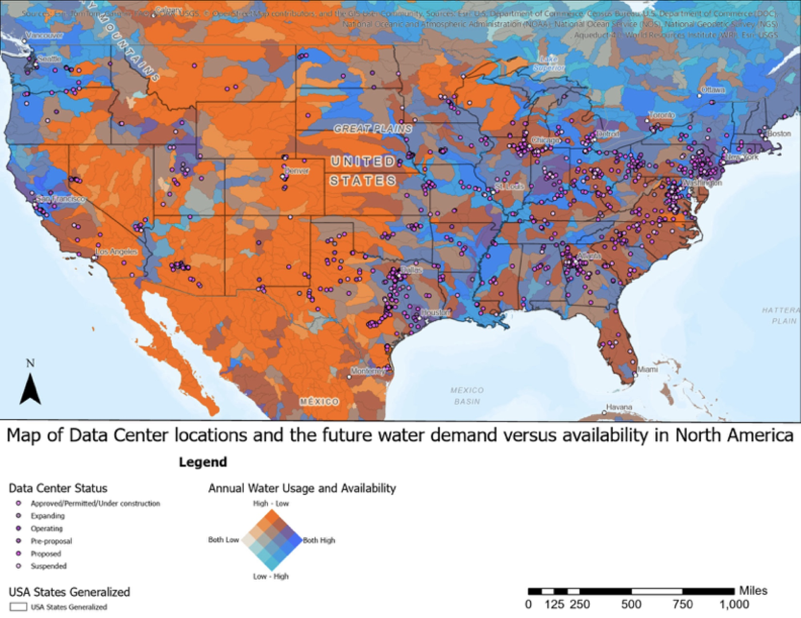
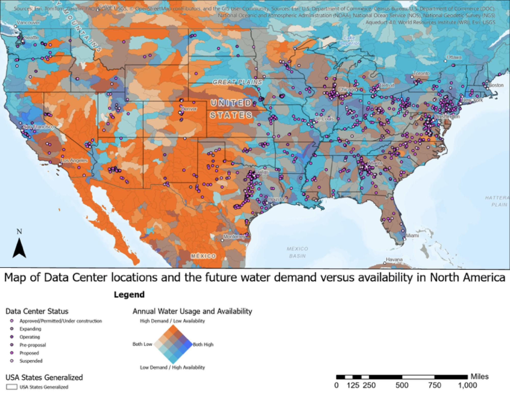

Data center locations over current water demand vs. availability in North America (PDF layout)
What the maps show
Data centers cluster in basins with high water demand and low availability, including Phoenix, Tucson, and north and northwest Texas
A belt of East Coast data centers sits in a region with lower availability than its coastal neighbors
Basins with high availability and low demand hold few data centers
Built on Aqueduct 4.0, WRI’s very large global hydrological model dataset, layered with 1,711 data center sites
These are preliminary, midterm results. The patterns above come from visual spatial analysis, and the statistical comparison is still ahead.
How to read it, and what changes in the future
Each basin is colored by two Aqueduct indicators at once. Orange means high water demand and low availability, blue means low demand and high availability, and purple points are data centers shaded by status (approved or under construction, expanding, operating, pre-proposal, proposed, suspended).
Drag the slider to compare two future scenarios. The data center points are identical in both maps, so only the water layer changes.


Future: business as usualFuture: pessimistic
Under the pessimistic outlook, where water use keeps outpacing supply, more of the central and eastern U.S. shifts toward high demand and low availability. Full layouts: business as usual (PDF) · pessimistic (PDF).
How it came together
The core of the project is the Aqueduct 4.0 hydrological model. It turns PCR-GLOBWB 2 model outputs into water risk indicators for regions across the globe, with optimistic, current, and pessimistic values for each water state. That is big data: a very large, multi-scenario geospatial dataset that can’t be compared by hand, so ArcGIS Pro does the heavy lifting of matching coordinate systems and layering it with the other datasets. The results are still preliminary.
The maps set up a three-group county comparison: counties with high demand, low availability, and data centers; counties with high demand, high availability, and data centers; and counties with high demand, low availability, and none. Each group will then be compared on income, health costs, and resource pricing, and I plan to test regression models to see which fits best.
Two limits I’m working around: the analysis doesn’t yet account for data center size, and metropolitan counties, which have many sites and low vulnerability, carry too much weight. The tracker is also user-submitted and run by an advocacy group, so I cleaned it and checked its cited sources before mapping.
Skills demonstrated
ArcGIS Pro
Spatial analysis
Data cleaning
Cartography
Data visualization
Big geospatial data
Hydrological model data (Aqueduct 4.0)
Beyond the technical: Teamwork · Data storytelling
The full story
Data centers use water directly for cooling and indirectly through the electricity that powers them. This project doesn’t measure that use. It asks a prior question: are U.S. data centers disproportionately placed in water-stressed regions and in socially vulnerable communities?
The starting observation was that data centers often seem to land in regions that already strain their water, like the planned Box Elder data center in Utah. The maps test that across the whole country, and the social vulnerability analysis checks who lives near these sites.
So far, the maps show data centers clustering in water-stressed basins. These are preliminary midterm results from working with the Aqueduct 4.0 hydrological model, and the county-group comparison and social vulnerability analysis will test them further.